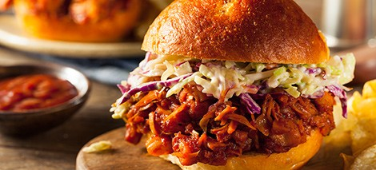

JackFruit Sliders

Jackfruit sliders that are simple and delicious!
First of all, my family and I always enjoy this recipe.
It is a go to meal of ours during the summer when we want something light and simple.
The ingredients list is short and accessible, so hopefully you and your family find this recipe as amazing as we do!
These poppable bites are a treat.
You can dress them up as much as you'd like or dress them down for quicker consumption.
We love sauces and condiments so typically ours look like the picture above.
You get so many different flavors, from the BBQ flavored jackfruit, to the sweetness of the slaw, everything is balanaced so well! Enjoy!
Ingredients:
- Jackfruit (We do the canned version from Trader Joes)
- Hawaiin Rolls
- Butter
- Cabbage and carrot mix
- Ranch
- BBQ sauce
- Cheese (A mild cheddar is a nice addition)
Steps:
- Open jackfruit can and place contents in a pan on medim heat
- Cook until browned and tender
- Add BBQ sauce and mix until the jackfruit is covered in sauce
- Set aside
- Empty cabbage and carrot mix into mixing bowl and mix with ranch
- Cut hawaiin Rolls in half and place the bottom half on a coated cookie sheet
- Layer cheese over bottom half of hawaiin rolls, then place jackfruit on top of cheese
- Place top layer of Hawaiian Rolls back on the sandwiches and cover with melted butter
- Place in the overn at 350 degrees for 10 minutes
- Take them out of the overn and add the cabbage mix to the sandwiches
And there you have it!